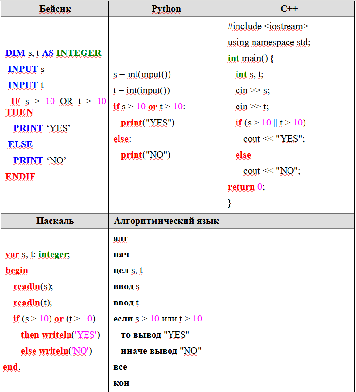
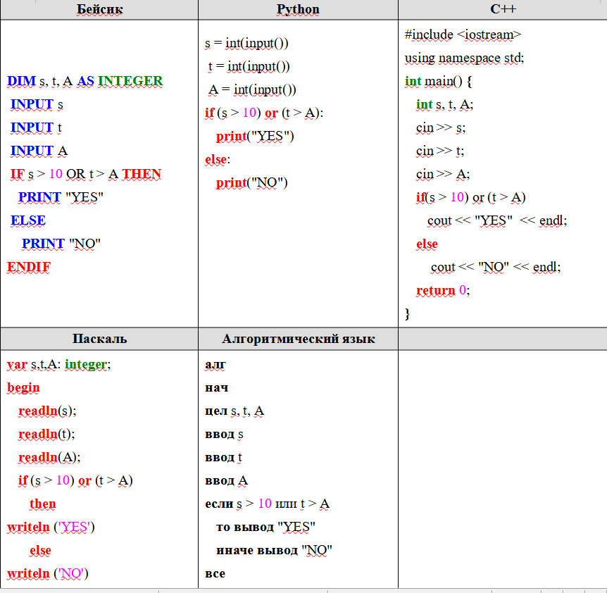
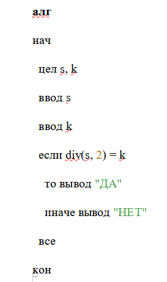
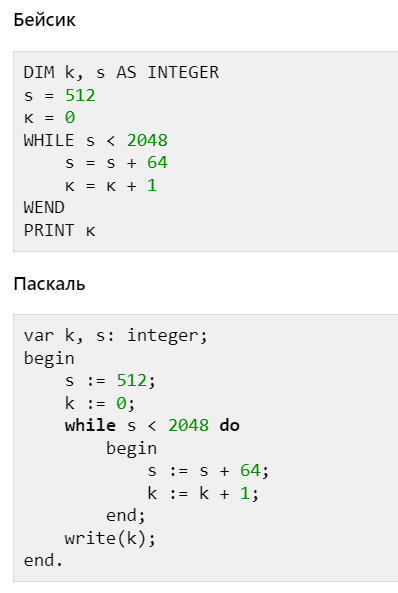
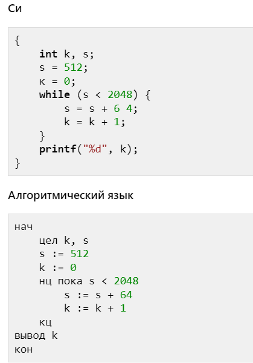

Задание 6. Формально исполнять алгоритмы, записанные на языке программирования
1.Ниже приведена программа, записанная на пяти языках программирования.
Было проведено 9 запусков программы, при которых в качестве значений переменных s и t вводились следующие пары чисел:
(1, 2); (11, 2); (1, 12); (11, 12); (–11, –12); (–11, 12); (–12, 11); (10, 10); (10, 5).
Сколько было запусков, при которых программа напечатала «YES»?Решение.
Заметим, что программа напечатает «YES», если одна из введённых переменных s или t будет больше 10. Значит, было 5 запусков, при которых программа напечатала «YES». В качестве значений переменных s и t в этих случаях вводились следующие пары чисел:(11, 2); (1, 12); (11, 12); (–11, 12); (–12, 11).
Ответ: 5.
2. Ниже приведена программа, записанная на пяти языках программирования.
Было проведено 9 запусков программы, при которых в качестве значений переменных s и t вводились следующие пары чисел:
(6, 4); (7, 8); (12, 10); (5, 6); (11, 10); (–5, 7); (–2, 2); (4, 5); (8, 6).
Сколько было запусков, при которых программа напечатала «NO»?Решение.
Заметим, что программа напечатает «NO», если обе введённые переменные s и t будут больше или равны 10. Значит, было 2 запуска, при которых программа напечатала «NO». В качестве значений переменных s и t в этих случаях вводились следующие пары чисел:(12, 10); (11, 10).
Ответ: 2.
3. Ниже приведена программа, записанная на пяти языках программирования.
Было проведено 9 запусков программы, при которых в качестве значений переменных s и t вводились следующие пары чисел:
(1, 2); (11, 2); (1, 12); (11, 12); (−11, −12); (−11, 12); (−12, 11); (10, 10); (10, 5).
Укажите количество целых значений параметра A, при которых для указанных входных данных программа напечатает «NO» три раза.Решение.
Заметим, что программа напечатает «NO», если переменная s будет меньше или равна 10, а переменная t будет меньше или равна А. Из первой части условия получаем, что при вводе значений s и t (11, 2) и (11, 12) программа напечатает «YES» вне зависимости от значения A. Заметим, что при A = 1 программа напечатает «NO» один раз, при 2 ≤ A ≤ 4 программа напечатает «NO» два раза, при 5 ≤ A ≤ 9 программа напечатает «NO» три раза, а при A > 9 программа будет печатать «NO» четыре и более раз. Таким образом, существует 5 значений параметра A, при которых «NO» будет напечатано три раза, а именно 5, 6, 7, 8, 9, следовательно, ответ — 5.Ответ: 5.
4. Ниже приведена программа, записанная на алгоритмическом языке программирования.
Было проведено 9 запусков программы, при которых в качестве значений переменных и вводились следующие пары чисел:
(1, 1); (8, 4); (14, 10); (20, 1); (7, 3); (10, 5); (10, 2); (4, 1); (1, 0). Сколько было запусков, при которых программа напечатала «ДА»?Решение.
Заметим, что программа выводит "ДА", если при делении числа s на 2 получается k (остаток здесь не важен). Значит, было таких 4 запуска. В качестве значений переменных s и t в этих случаях вводились следующие пары чисел:(8, 4); (7, 3); (10, 5); (1, 0).
Ответ: 4.
5. Запишите число, которое будет напечатано в результате выполнения следующей программы.
Для Вашего удобства программа представлена на пяти языках программирования.
 Решение.
Сначала для s было присвоено число 512, цикл будет работать, пока после его выполнения s, будет меньше 2048. Вычтем из 2048 пятьсот двенадцать и получим 1536, это то число, которое алгоритм будет прибавлять. Программа выводит значение k, поэтому, чтобы узнать, что получится в итоге, нужно 1536 поделить на 64, которое прибавляется к значению s. В результате деления получилось число 24.Ответ: 24.